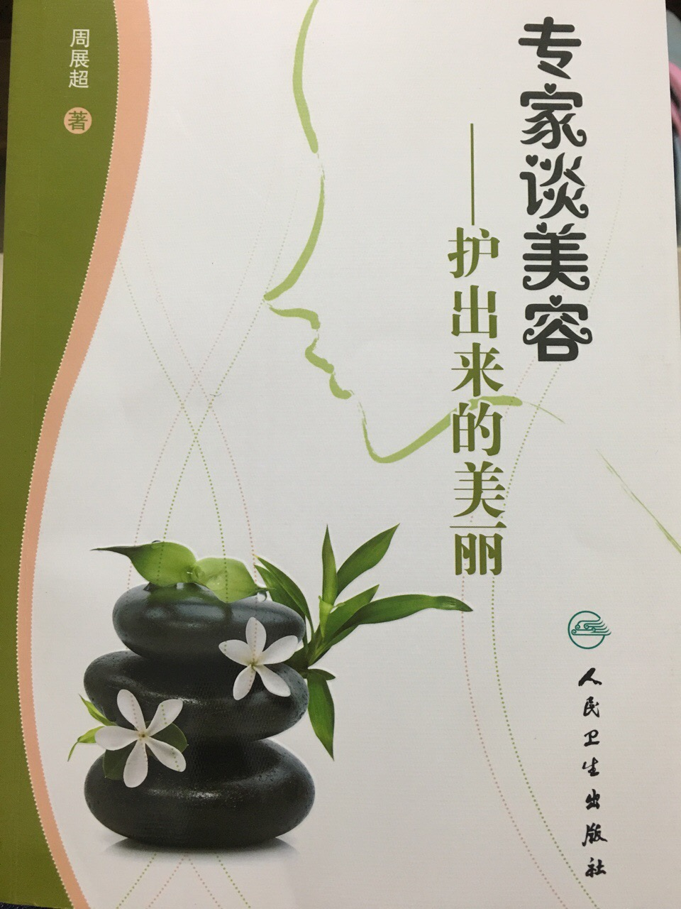
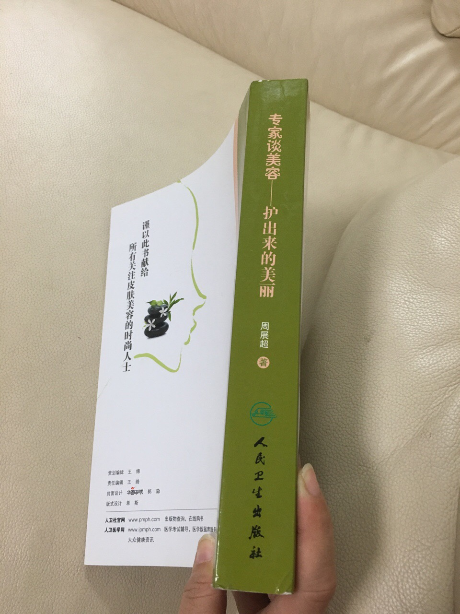

#读书#学习学习再学习。这本@周展超教授 的《专家谈美容-护出来的美丽》内容非常好，文字也很通俗，接底气。就是出版社没选好，让这本书的设计外观看起来像大部头教材，会让普通读者望而生畏，会很影响销量。 
如果我来操作这本书，会采用另一种方式，用微博微信公众号逐篇发布，每篇后有下章预告。然后联系电子书出版，低价预售。最后才会出版纸质书，至少要作成彩版。@Ada李力:#读书#学习学习再学习。这本@周展超教授 的《专家谈美容-护出来的美丽》内容非常好，文字也很通俗，接底气。就是出版社没选好，让这本书的设计外观看起来像大部头教材，会让普通读者望而生畏，会很影响销量。
安慰剂的作用很大 //@西瓜大丸子汤:学到另一个冷酷的现实。其实对大多数人，他们参与在线教育对最后成绩，也许也包括技能的提高并无作用。在线教育提供了安慰剂。---:抱歉，作者已设置仅展示半年内微博，此微博已不可见。